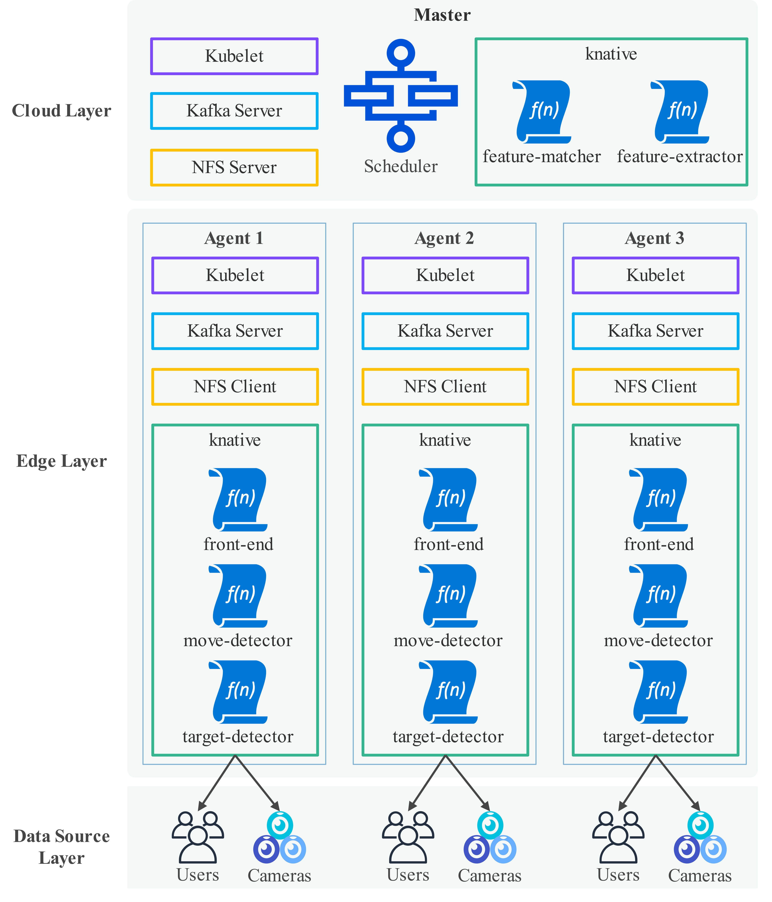
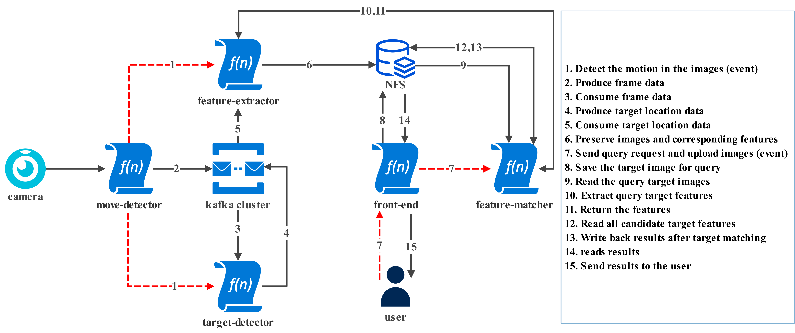
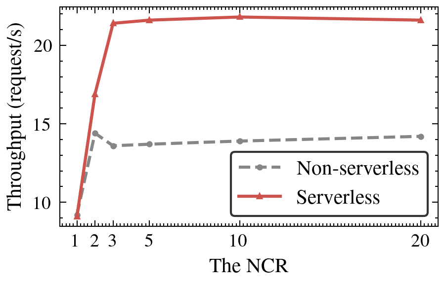
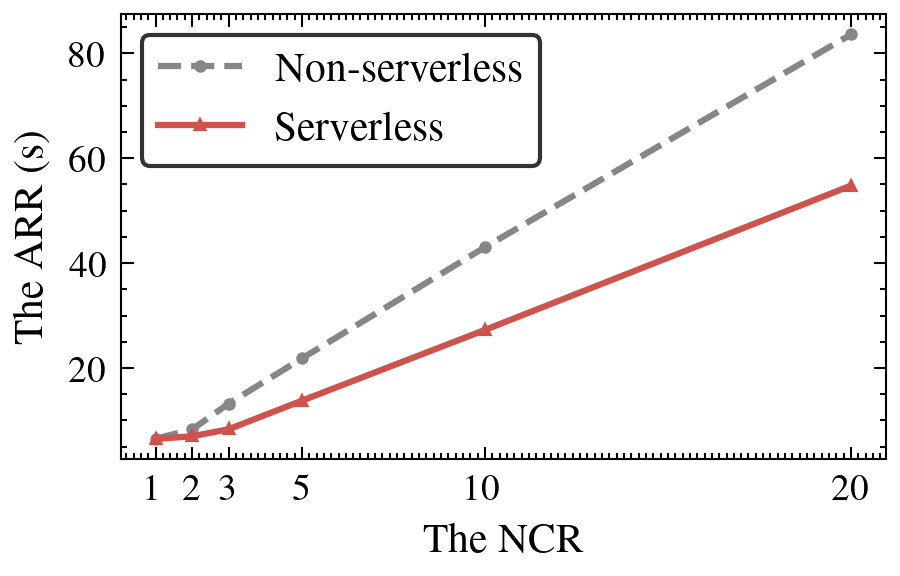
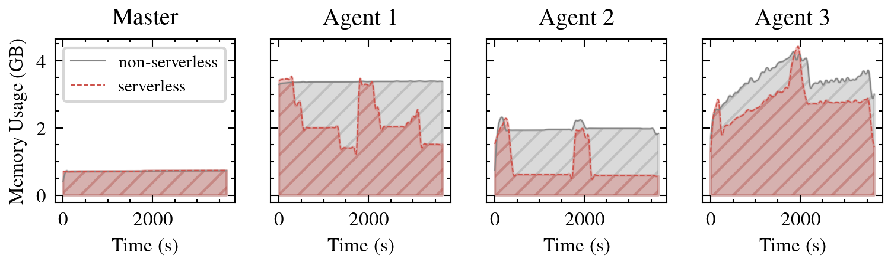
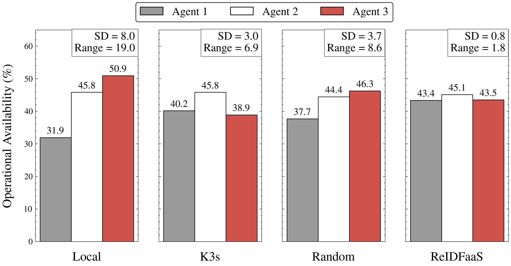
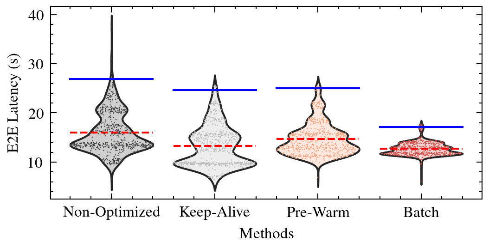
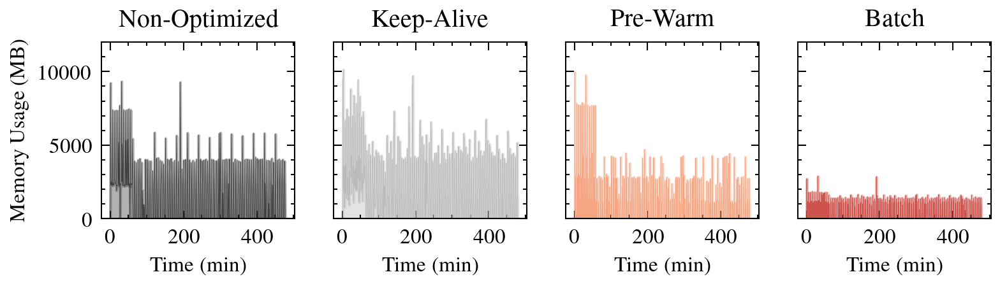
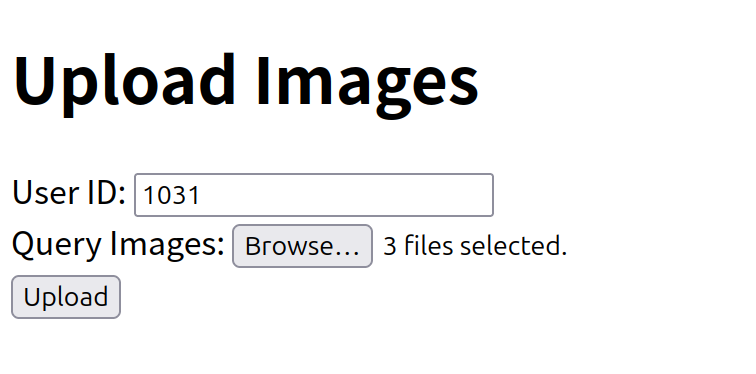
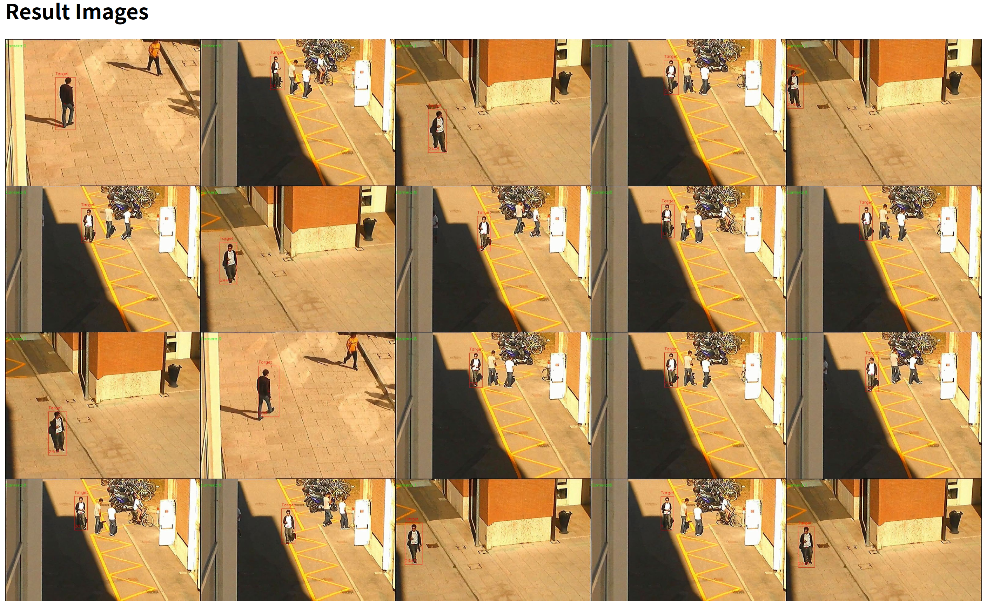

An event-driven Re-ID system replacing continuous computation with pedestrian movement-triggered execution, significantly reducing resource usage while maintaining real-time performance. Computational tasks (detection, extraction, tracking) activate only upon motion events.
A priority-based dynamic scheduler that integrates real-time energy reserves, hot container availability, predicted energy consumption, co-location penalties, and load constraints to optimize task placement across heterogeneous edge nodes.
A latency-optimized adaptive batching mechanism that dynamically adjusts batch size and processing interval based on tail latency monitoring, reducing cold-start frequency while maintaining strict latency constraints.
A three-tier edge-cloud architecture with Kafka for data streaming, NFS for persistent storage, and Knative on K3s for serverless auto-scaling.

A 15-step event-driven pipeline from motion detection to result visualization.

ReIDFaaS achieves identical Re-ID accuracy while significantly improving throughput (+53%) and reducing response latency (-35%).



Our scheduler achieves the highest total remaining energy (2072Wh) and the most balanced operational availability (SD=0.8%, Range=1.8%).
| Scheduler | Agent 1 | Agent 2 | Agent 3 | Total Remaining |
|---|---|---|---|---|
| Local | 1196Wh | 264Wh | 220Wh | 1680Wh |
| K3s | 1504Wh | 264Wh | 168Wh | 1936Wh |
| Random | 1412Wh | 256Wh | 200Wh | 1868Wh |
| ReIDFaaS | 1624Wh | 260Wh | 188Wh | 2072Wh |

Our batching method reduces P99 latency by 30% and memory usage by 55% compared to state-of-the-art cold-start mitigation strategies.


Users upload query images of a target person, and the system identifies matching persons across all camera feeds.


If you find this work useful, please cite our paper: